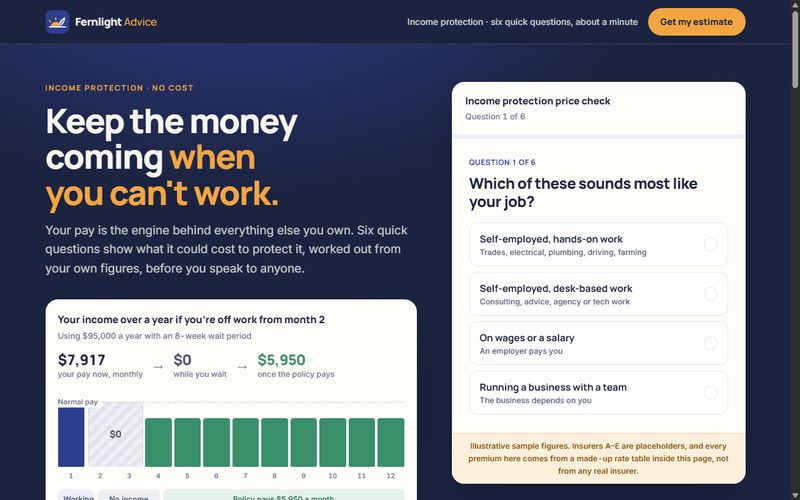
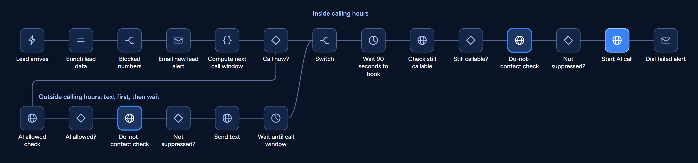

Case study: Fernlight Advice income protection
AI calls that put leads through to a real adviser
People filled in Fernlight Advice's income protection quiz, then left without booking. I built the voice agents and workflows that phone them about 96 seconds later, offer a live adviser, and fall back to a booking or a text if they'd rather not.
- seconds from form to first call
- ~96
- do-not-contact checks
- 16
- transfer test chats passed
- 98 of 98
- Enquiry at 10:02 amIncome protection, no time booked
- AI calls about 96 seconds laterSays it's an AI and that the call may be recorded
- Adviser on the lineFirst adviser to press 1 takes the call
Try the call
Real recordings are real people's calls, so I can't share them. This follows the live script with the names changed. Choose what the lead says and see where each answer goes.
Behind the call
The brief
Fernlight Advice is a stand-in name for a real New Zealand advice firm, and I've left out its name, its people and its lead numbers. People were completing its insurance quiz and leaving without booking. The firm wanted them phoned quickly and put through to a local adviser. The same system also runs its home-loan line, so some of the testing below ran there.
I owned the voice agents, the n8n workflows and the transfer backend, working from the agency's briefs and building with Claude Code. A colleague built the first landing pages and CRM, and I extended both.

-
Reach people who didn't book
Someone who fills in a quiz and leaves has still asked for help, so the AI phones while the enquiry is fresh.
-
A real adviser is the goal
The call exists to get the lead talking to an adviser, free of charge. It's kept short and never turns into an interview.
-
No advice from the AI
It can't quote premiums, recommend a policy, or say whether someone would be accepted. Those questions go to an adviser.
-
Stop means stop
An opt-out takes effect during the call, and every later campaign call and text checks the list first.
How a lead moves through the system
Six steps, in order. Each one decides whether the next is allowed to happen.
-
Take the enquiry and leave time to book
The form saves the lead and hands it to n8n. Inside calling hours, Monday to Saturday from 8:30 am to 8 pm, the system waits 90 seconds so nobody gets called while they're still booking online. Outside those hours, the lead gets a text and a call when the window opens.
Next.js, n8n, Supabase, TNZ
-
Check the list before every contact
Before each campaign call or text, n8n asks the CRM whether the number is on the do-not-contact list. Follow-up calls also check that the lead is still new, so anyone who has booked stops getting them.
n8n, Next.js API routes
-
Keep the call short and honest
The AI says what it is, checks it has the right person and names the enquiry. It answers from its knowledge file and nothing else. If someone mentions a health condition, it acknowledges that once, asks nothing further and saves no medical detail.
Retell, originally VAPI
-
Ring every adviser at once
Inside adviser hours, Monday to Friday from 8:30 am to 5 pm, the AI offers a free adviser now. Every adviser on the team rings together, and the first to press 1 wins. The other phones stop and the caller joins the winner on a conference call. Self-employed leads go straight to the business cover specialist instead, connected on answer.
Twilio, n8n, Postgres
-
Fall back without losing the lead
A no to the transfer gets an offer of a video appointment, then a text with a booking link. Bookings land on the right team calendar for personal or business cover. A voicemail starts a follow-up ladder of up to 5 calls over several days, and each call checks the lead again first.
Cal.com, n8n, TNZ
-
Show the team where each lead came from
The ad name had been stored all along, but the CRM only showed the campaign. Each lead page now opens on the campaign name, followed by the ad set, the ad and the enquiry, with the tracking details one click down.
Next.js, Supabase, Meta Pixel and Conversions API
What broke, and what fixed it
This system runs on real leads, so the failures were real too. These four taught me the most, and none of them showed up as a failed run.
-
windowStartHour: 8, windowEndHour: 5, f.hour >= 8 && f.hour < 5 // false at every hourBefore windowStart: '08:30', windowEnd: '20:00', const m = f.hour*60 + f.minute m >= START && m < ENDAfter A calling window that could never open
An edit set the closing hour to 5, meaning 5 pm, on a 24-hour clock. No hour passes that test, so every lead got a "we'll call during business hours" text and no call. A later edit to 8.5 and 5.5 made it worse, and JavaScript dropped the half hour without an error. Times are now "HH:MM" strings, so a bare 5 can't be written.
-
HTTP 400 Couldn't get tool for hook onError: continueRegularOutput n8n run status: successBefore onError: continueErrorOutput on failure: Dial Failed alertAfter A failed dial that reported success
A deleted tool was still on the agent's list, so the voice platform refused the call. n8n kept going and marked the run green, so nobody was told. It came back when an old version of the agent was saved over my repair, hitting 8 test dials and no real lead. I repaired the list by script, and every failed dial now sends an alert.
-
AI: "Please hold while I connect you..." tools called: noneBefore Never say "please hold" unless that same reply calls the transfer tool.After "Please hold" with nothing behind it
A test on the home-loan agent, which shares this flow, made 29 of 30 transfers. In the miss, it promised a transfer and never called the tool, which on a real call means silence. It also said advisers were available when the window was only open. New prompt rules fixed both, and the final live run passed 98 of 98.
-
// new lead source sent call_attempt: '1st_call' // follow-ups looked for call_attempt === '1st_callback'Before call_attempt: '1st_callback' voicemail: text and email sent second call: 20 minutes laterAfter One word lost in a platform move
After the switch to Retell, a first call that reached voicemail got no follow-up, because the new workflow sent a value the old logic wasn't looking for. A check of the whole system caught it the same day. Two home-loan leads were affected. I fixed the value and re-ran just their follow-ups from a temporary copy, which I then deleted.
Results and limits
These are engineering results, read from the live system's logs and tests. I can't publish the firm's lead numbers, and I haven't measured conversion before and after, so I'm not claiming an uplift.
What it delivered
- 95 to 96 seconds from form to first dial in the 6 latest in-hours runs on this line, read 1 November 2026. That includes the 90-second wait.
- 16 do-not-contact checks across 4 live workflows, one in front of each campaign call and text.
- 98 of 98 test chats correct on when to transfer: 30 of 30 transfers when the window was open and the caller wanted an adviser, 0 in 56 closed-window chats.
- Both product lines moved from VAPI to Retell in one scripted switch with a rollback, on 29 October 2026. The first real leads afterwards were dialled with nobody stepping in.
- 38 new tracking columns across leads and nurture contacts, with the campaign name first on each lead page.
Where it stops
- The 98-chat test ran by text, on the home-loan agent, before the move to Retell. It hasn't been repeated on Retell.
- The do-not-contact check in n8n fails open. If the CRM is down, outreach carries on, so a number on the list could be reached during an outage. That's a deliberate trade, written into the change record.
- Ad tracking depends on the ad accounts. Meta ad IDs and Google click data only fill in once those platforms pass them, and that setup was still open in late October.
Getting an AI to talk is the easy part. The work is deciding when it may call, who picks up, and what happens when a step fails.
Under the hood
| Lead arrives (NZ time) | Result | Next call slot |
|---|---|---|
| Thu 18 Sep, 07:00 | Waits | Same day, 08:30 |
| Thu 18 Sep, 08:29 | Waits | Same day, 08:30 |
| Thu 18 Sep, 08:30 | Calls now | Now |
| Thu 18 Sep, 12:00 | Calls now | Now |
| Thu 18 Sep, 19:59 | Calls now | Now |
| Thu 18 Sep, 20:00 | Waits | Fri 19 Sep, 08:30 |
| Thu 18 Sep, 23:00 | Waits | Fri 19 Sep, 08:30 |
| Sat 19 Sep, 10:00 | Calls now | Now |
| Sun 20 Sep, 10:00 | Waits | Mon 21 Sep, 08:30 |
| Sat 26 Sep, 20:30 | Waits | Mon 28 Sep, 08:30, across the daylight saving change |
| Fri 25 Dec, 10:00 | Waits | Mon 28 Dec, 08:30, skipping the holiday |

UPDATE transfers
SET winner_adviser_id = :adviser_id,
status = 'accepted',
accepted_at = NOW()
WHERE transfer_id = :transfer_id
AND winner_adviser_id IS NULL
AND status = 'pending'
AND expires_at > NOW()
RETURNING transfer_id, winner_adviser_id;Where this lead came from
Income protection, self-employed
Meta, campaign ID 1200000000
- Ad set
- Trades, 30 to 55
- Ad
- Keep the money coming, video 2
- Enquiry
- Insurance, income protection
- Arrived
- Tue 3 Nov, 10:02 am
Tracking details
- Landing page
- fernlight.example/cover
- UTM source and medium
- facebook, paid
- Click ID
- fbclid: sample-0000
Losing leads between the form and the phone?
I build voice agents with the checks built in: when to call, who picks up and when to stop. Book a free 30-minute call, or send me an email.
- raffymcfee@gmail.com
- Location
- Pampanga, Philippines